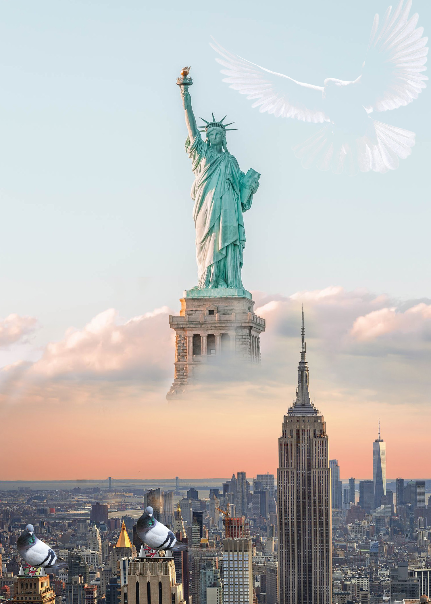

| Photomontage 1 | Photomontage 2 |
|---|---|
|
|
 |
The issue I am exploring is an ecological issue when it comes to birds. These birds are usually harmed by people because they find them annoying. Blue Jays tend to be aggressive birds and often do damage to other birds nests which is why people find it simple to just shoot them since they are annoying, but they are wrong in doing so because blue Jays help spread trees, to be specific nut bearing trees since they tend to eat nuts. I decided to use the rainbow mountain because it is having problems with contamination due to the amount of tourists that go every year. As for pigeons, people find them annoying because they are everywhere around the city and always pooping. People tend to forget pigeons used to be domesticated animals and they were used as messengers, but then they were abandoned and now they try to live on the streets. People now put pigeon spikes around their stores so pigeons won't stand there. For both collages I used masking to blend in the pictures well, for the first collage I used it to mix two different locations together, the first being a picture of a mountain with a beautiful night sky but I used masking to get rid of the mountains and add the rainbow mountain that is found in Peru. For the second collage I used masking to mesh in two locations as well, the Statue of liberty and the new york city buildings, I think it helped both blend in together well so I am very happy about that. For blending, I used it to blend in the birds to the background kind of to put emphasis on how they are being harmed by people, so I used two different layer blend modes for each image. For the pigeon I placed it on the right of the statue of liberty and I used lighten. For the blue jay I used linear dodge which I placed on the rainbow mountain. Most of my images were found on google, I would usually look up the png of some images, in both collages it was pngs of the birds, this saved me the time from having to get rid of the background.